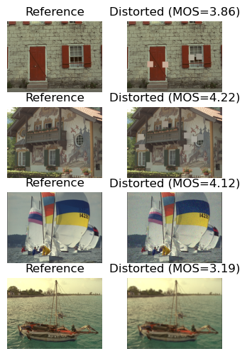

df = pd.read_csv(path_txt, header=None, sep=" ", names=["MOS", "Dist"])
df.head()| MOS | Dist | |
|---|---|---|
| 0 | 5.9706 | i01_01_1.bmp |
| 1 | 5.4167 | i01_01_2.bmp |
| 2 | 4.5556 | i01_01_3.bmp |
| 3 | 4.3143 | i01_01_4.bmp |
| 4 | 6.1429 | i01_02_1.bmp |
TID2008 is already present on our server, but one may find it a little bit confusing to load: there is a mos_with_names.txt file that connects each distorted image with its MOS, the reference images are in the reference_images foldes, and the distorted images are in the distorted_images folder. This means that we will have to load both folders and connect the corresponding images with the mos_with_names.txt file.
Another important thing to note is that each distorted image is named in a meaningful way: I(img_id)_(dist_id)_(dist_int).bmp, so we may use that information at our discretion. Leaving complicated filterings aside, we can start by loading all the images and connecting them.
We will start by loading the mos_with_names.txt file defining our DataBlock:
| MOS | Dist | |
|---|---|---|
| 0 | 5.9706 | i01_01_1.bmp |
| 1 | 5.4167 | i01_01_2.bmp |
| 2 | 4.5556 | i01_01_3.bmp |
| 3 | 4.3143 | i01_01_4.bmp |
| 4 | 6.1429 | i01_02_1.bmp |
Turns out that the filenames in the .txt file are lowercase but the filenames of the images are uppercase. Because we can’t modify any of those to avoid breaking other’s people code, we have to uppercase the initial I of the image names in the loaded dataframe.
| MOS | Dist | |
|---|---|---|
| 0 | 5.9706 | I01_01_1.bmp |
| 1 | 5.4167 | I01_01_2.bmp |
| 2 | 4.5556 | I01_01_3.bmp |
| 3 | 4.3143 | I01_01_4.bmp |
| 4 | 6.1429 | I01_02_1.bmp |
To avoid unnecessary hustle, we can a column to our dataframe that points to the corresponding reference_image and we should be good to go. Keep in mind that, as we should be expecting this far in, reference images are all in uppercase format (extension included), so we’ll have to adjust consequently.
| MOS | Dist | Ref | |
|---|---|---|---|
| 0 | 5.9706 | I01_01_1.bmp | I01.BMP |
| 1 | 5.4167 | I01_01_2.bmp | I01.BMP |
| 2 | 4.5556 | I01_01_3.bmp | I01.BMP |
| 3 | 4.3143 | I01_01_4.bmp | I01.BMP |
| 4 | 6.1429 | I01_02_1.bmp | I01.BMP |
We will be saving the generated .csv to skip this step further:
We have a kind of “complicated” data with two input images and one output, so we can’t use the base .show_batch() method right away. Instead, we can iterate over the DataLoader by hand to plot the data:
fig, axes = plt.subplots(4,2, figsize=(4,6))
for i in range(len(axes)):
axes[i,0].imshow(img_ref[i].permute(1,2,0))
axes[i,0].set_title("Reference")
axes[i,1].imshow(img_dist[i].permute(1,2,0))
axes[i,1].set_title(f"Distorted (MOS={mos[i]:.2f})")
for ax in axes.ravel(): ax.axis('off')
plt.show()